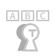

我的設計思考流程
分析與了解
了解公司與產品的商業模式
分析使用者使用問題
訂定成效指標
有效率？使用率？點擊率？轉換率？
依專案需要設定
設計開發
腦力激盪
設計思考並執行
驗證假設
持續測試、修正、優化
易用性測試、原型測試
成效指標評估
是否幫助解決問題？
解決成效有達指標嗎？
並運用工具

Figma

illustrator
Photoshop
primere
Affter effect
Notion
協助我在 UI／UX 應用
wireframe
UI Flow
User Interface
Prototype
Usability
html、CSS
User Research、User Interview、User Journey、UI Component
學歷
2017.06 畢業
國立臺中科技大學多媒體設計系
Department of Multimedia Design
National Taichung University of Science and Technology, Taiwan
National Taichung University of Science and Technology, Taiwan
人格特質
富有同理心能用他人角度思考
具觀察生活周遭的敏銳特質

能客觀的看待事物並分析脈絡
提出問題開放式分享及溝通